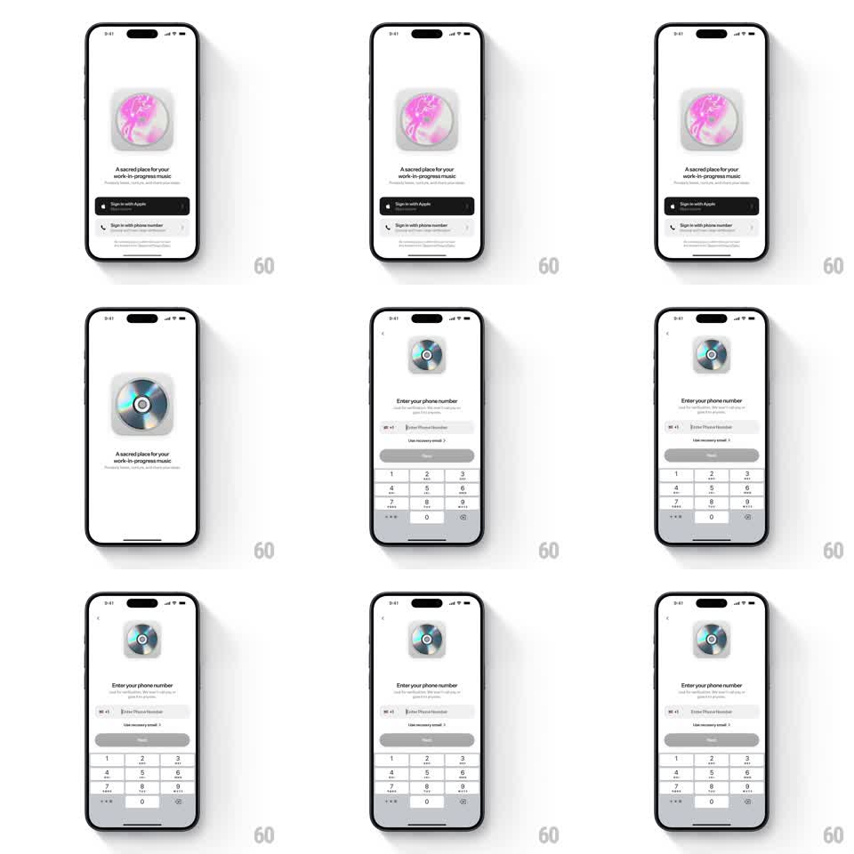

Media
Frame-by-frame

Rebuild this interaction 1:1: a sign-in transition where the welcome screen's central 3D disc shrinks and travels to a small header slot as the phone-number entry screen slides in underneath - one shared element carries across both screens.

Rebuild this interaction 1:1: a sign-in transition where the welcome screen's central 3D disc shrinks and travels to a small header slot as the phone-number entry screen slides in underneath - one shared element carries across both screens. ## Integration Integration: stack-agnostic spec - springs given as stiffness/damping, timed motions as duration + curve; map every value to your framework and animation library of choice. ## Scene Welcome screen: large iridescent CD disc centered in a gray rounded card, tagline "A sacred place for your work-in-progress music", "Sign in with Apple" (dark) and "Sign in with phone number" buttons. Phone screen: back chevron, small disc at top-center, "Enter your phone number" heading, country-code + number field, "Use recovery email" link, disabled Next button, numeric keypad. ## Motion spec Pattern: shared-element shrink-and-travel + screen slide. - On load, the hero disc's surface swirls from a pink abstract blob into the CD texture (~600ms crossfade with slight rotation). - Tap "Sign in with phone number": the phone-entry screen slides up/in (~300ms, ease-out) while the disc scales ~0.45 and translates to the header slot through the same motion (spring ~300/26, ~350ms) - the disc never cuts, it travels. - Welcome copy and buttons fade + drop ~20px as the new screen arrives (200ms). - Keypad rises with the screen (same 300ms), no separate animation. - Back reverses the whole transition. ## Calibration - The disc is one element across both screens; its scale/position interpolate, never reset. - The travel arc is vertical (center -> top), no horizontal drift. ## Reduced motion Screens crossfade; disc swaps size without travel. ## Don't miss - The disc keeps spinning/shimmering subtly throughout the transition. - The gray card behind the welcome disc does not travel - only the disc does.